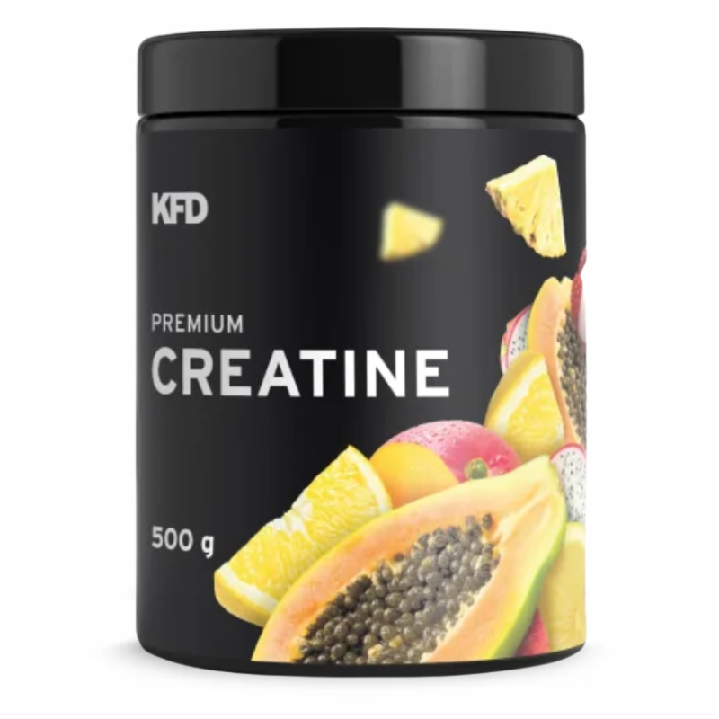

Kreatyna
Co to Kreatyna?
Kreatyna to naturalny związek chemiczny występujący głównie w mięśniach i mózgu, który pomaga dostarczać energię do komórek, zwłaszcza podczas intensywnego wysiłku fizycznego. Jest popularnym suplementem diety stosowanym w celu zwiększenia wydolności, siły mięśniowej oraz wspomagania regeneracji po treningach.
Cena: 49 PLN